Demonstration: Urban Flight
Copyright © 2024, United States Government, as represented by the Administrator of the National Aeronautics and Space Administration. All rights reserved.
The “"Fault Model Design tools - fmdtools version 2"” software is licensed under the Apache License, Version 2.0 (the "License"); you may not use this file except in compliance with the License. You may obtain a copy of the License at http://www.apache.org/licenses/LICENSE-2.0.
Unless required by applicable law or agreed to in writing, software distributed under the License is distributed on an "AS IS" BASIS, WITHOUT WARRANTIES OR CONDITIONS OF ANY KIND, either express or implied. See the License for the specific language governing permissions and limitations under the License.
import fmdtools.sim.propagate as propagate
from fmdtools.analyze import tabulate
import matplotlib.pyplot as plt
from mpl_toolkits.mplot3d import Axes3D
import pandas as pd
import numpy as np
Model Overview
The urban flight drone represents a drone flying over an urban area with buildings and places to land (or not land).
This drone model variant is defined in model_urban.py, along with some visualization functions.
from model_urban import Drone
mdl = Drone(sp={'end_condition': 'scenario_finished'})
mdl
drone Drone
- t=Time(time=-0.1, timers={})
- m=Mode(mode='nominal', faults=set(), sub_faults=False)
FLOWS:
- force_st=Force(s=(support=1.0))
- force_lin=Force(s=(support=1.0))
- hsig_dofs=HSig(s=(hstate='nominal'))
- hsig_bat=HSig(s=(hstate='nominal'))
- rsig_traj=RSig(s=(mode='continue'))
- ee_1=EE(s=(rate=1.0, effort=1.0))
- ee_mot=EE(s=(rate=1.0, effort=1.0))
- ee_ctl=EE(s=(rate=1.0, effort=1.0))
- ctl=Control(s=(forward=1.0, upward=1.0))
- dofs=DOFs(s=(vertvel=1.0, planvel=1.0, planpwr=1.0, uppwr=1.0, x=0.0, y=0.0, z=0.0))
- des_traj=DesTraj(s=(dx=1.0, dy=0.0, dz=0.0, power=1.0))
- environment=UrbanDroneEnvironment(s=(safe=True, allowed=True, landed=True, occupied=False), c=(), ga=())
FXNS:
- manage_health=ManageHealth(m=(mode='nominal', faults=set(), sub_faults=False))
- store_ee=StoreEE(s=(soc=100.0), m=(mode='nominal', faults=set(), sub_faults=False))
- dist_ee=DistEE(s=(ee_tr=1.0, ee_te=1.0), m=(mode='nominal', faults=set(), sub_faults=False))
- affect_dof=AffectDOF(s=(e_to=1.0, e_ti=1.0, ct=1.0, mt=1.0, pt=1.0, lrstab=0.0, frstab=0.0), m=(mode='nominal', fau...
- ctl_dof=CtlDOF(s=(cs=1.0, power=1.0), m=(mode='nominal', faults=set(), sub_faults=False))
- plan_path=PlanPath(s=(pt=0, goal=(0.0, 0.0, 50.0), dist=0.0, ground_height=0.0, goals={0: [0, 0, 0], 1: (0, 0, np.f...
- hold_payload=HoldPayload(s=(force_gr=1.0), m=(mode='nominal', faults=set(), sub_faults=False))
This is the model structure:
from model_static import pos
mg = mdl.as_modelgraph()
pos = {**pos, **{'drone.flows.environment': [0.75, -0.5], 'drone.flows.rsig_traj': [-0.5, 0.35], 'drone.flows.hsig_dofs': [-0.25, 0.25], 'drone.flows.hsig_bat': [-0.55, -0.35], 'drone.fxns.manage_health': [-0.45, 0.0]}}
mg.set_pos(**pos)
fig, ax = mg.draw()
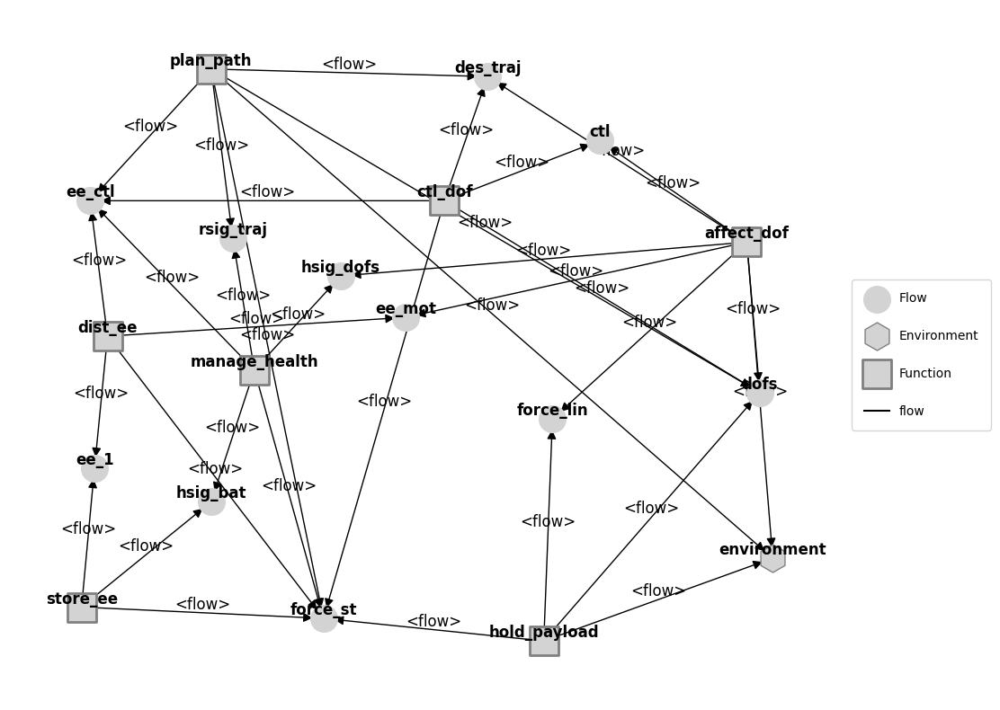
We can also view the grid environment using its show methods:
collections={"all_occupied": {"color": "red"}, "all_allowed": {"color": "blue"}, "start": {"color": "purple"}, "end": {"color": "orange"}}
fig, ax = mdl.flows['environment'].c.show({"height": {}}, collections=collections)
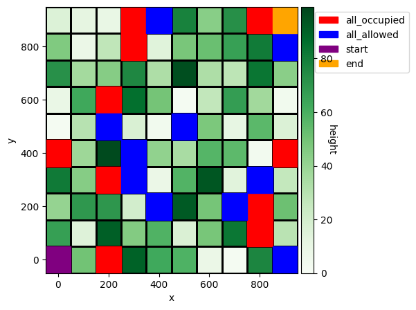
Which shows the Start, End, and allowed/unsafe locations in the 1000x1000-m grid. In this display, line thickness corresponds to building height, and hatching corresponds to whether or not the space is occupied. We can also display this using show.coord3d:
fig, ax = mdl.flows['environment'].c.show_z("height", collections=collections)
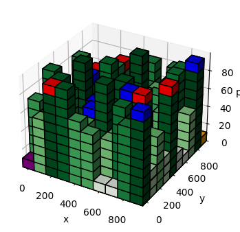
Nominal Simulation
Below we show how this drone performs in the nominal scenario.
results_nom, hist_nom = propagate.nominal(mdl)
fig, axs = hist_nom.plot_line("fxns.store_ee.s.soc",
'flows.ee_1.s.rate',
'flows.dofs.s.z',
'fxns.plan_path.m.mode',
'fxns.plan_path.s.pt',
'flows.des_traj.s.power')
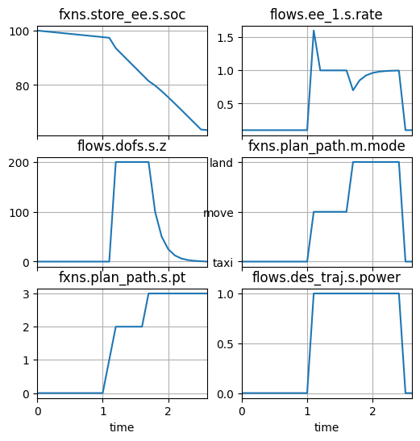
As shown, the flight ends fairly quickly (in 2.5 minutes), with the drone successively proceeding through points in the flight plan.
We can also view this flightpath in 3-d space using History.plot_trajectories:
fig, ax = hist_nom.plot_trajectories('dofs.s.x', 'dofs.s.y', 'dofs.s.z', time_groups=['nominal'], time_ticks=0.1)
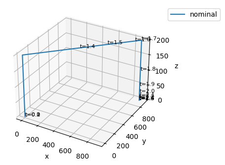
Trajectory plots can be overlaid on top of environment plots. In this case, we defined the method plot_env_with_traj and plot_env_with_traj_z for this case.
from model_urban import plot_env_with_traj, plot_env_with_traj_z
plot_env_with_traj_z(hist_nom, mdl)
(<Figure size 400x400 with 1 Axes>,
<Axes3D: title={'center': 'trajectory'}, xlabel='x', ylabel='y', zlabel='z'>)
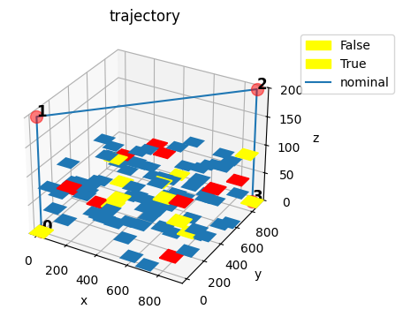
plot_env_with_traj(hist_nom, mdl)
(<Figure size 500x500 with 2 Axes>,
<Axes: title={'center': 'trajectory'}, xlabel='x', ylabel='y'>)
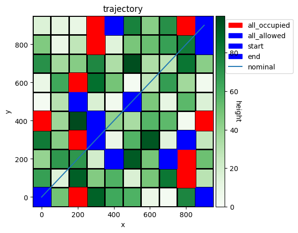
As shown, this is a rather simple straight-line path where the drone flies at full speed. If we wanted a more complex scenario, we could make the path more complex by adding multiple destinations or planning the path based on allowed flight/landing locations.
As it is, we may also want to adjust the timestep/speed to get more resolution, since the drone only has a few discrete timesteps in the air.
The results for the simulation are:
results_nom
tend.classify.rate: 1.0
tend.classify.cost: 0.0
tend.classify.expected_cost: 0.0
tend.classify.repcost: 0
tend.classify.unsafe_flight_time: 0
tend.classify.body_strikes: 0.0
tend.classify.head_strikes: 0.0
tend.classify.property_restrictions: 0
tend.classify.safecost: 0.0
tend.classify.landcost: 0
tend.classify.p_safety: 0.0
tend.classify.severities.hazardous: 0.0
tend.classify.severities.minor: 1.0
Resilience model
A number of different fault modes have been set up in the model to allow us to simulate various hazardous behaviors.
mdl.fxns['affect_dof'].get_faults(only_present=False)
{'drone.fxns.affect_dof': {},
'drone.fxns.affect_dof.ca': {},
'drone.fxns.affect_dof.ca.comps.lf': {'ctlbreak': Fault(prob=2.0000000000000003e-06, cost=1000, phases=(), disturbances=(), units='sim'),
'ctldn': Fault(prob=2.0000000000000003e-06, cost=500, phases=(), disturbances=(), units='sim'),
'ctlup': Fault(prob=2.0000000000000003e-06, cost=500, phases=(), disturbances=(), units='sim'),
'mechbreak': Fault(prob=1.0000000000000002e-06, cost=500, phases=(), disturbances=(), units='sim'),
'mechfriction': Fault(prob=5.000000000000001e-07, cost=500, phases=(), disturbances=(), units='sim'),
'openc': Fault(prob=1.0000000000000002e-06, cost=200, phases=(), disturbances=(), units='sim'),
'propbreak': Fault(prob=3.0000000000000004e-07, cost=200, phases=(), disturbances=(), units='sim'),
'propstuck': Fault(prob=2.0000000000000002e-07, cost=200, phases=(), disturbances=(), units='sim'),
'propwarp': Fault(prob=1.0000000000000001e-07, cost=200, phases=(), disturbances=(), units='sim'),
'short': Fault(prob=1.0000000000000002e-06, cost=200, phases=(), disturbances=(), units='sim')},
'drone.fxns.affect_dof.ca.comps.lr': {'ctlbreak': Fault(prob=2.0000000000000003e-06, cost=1000, phases=(), disturbances=(), units='sim'),
'ctldn': Fault(prob=2.0000000000000003e-06, cost=500, phases=(), disturbances=(), units='sim'),
'ctlup': Fault(prob=2.0000000000000003e-06, cost=500, phases=(), disturbances=(), units='sim'),
'mechbreak': Fault(prob=1.0000000000000002e-06, cost=500, phases=(), disturbances=(), units='sim'),
'mechfriction': Fault(prob=5.000000000000001e-07, cost=500, phases=(), disturbances=(), units='sim'),
'openc': Fault(prob=1.0000000000000002e-06, cost=200, phases=(), disturbances=(), units='sim'),
'propbreak': Fault(prob=3.0000000000000004e-07, cost=200, phases=(), disturbances=(), units='sim'),
'propstuck': Fault(prob=2.0000000000000002e-07, cost=200, phases=(), disturbances=(), units='sim'),
'propwarp': Fault(prob=1.0000000000000001e-07, cost=200, phases=(), disturbances=(), units='sim'),
'short': Fault(prob=1.0000000000000002e-06, cost=200, phases=(), disturbances=(), units='sim')},
'drone.fxns.affect_dof.ca.comps.rf': {'ctlbreak': Fault(prob=2.0000000000000003e-06, cost=1000, phases=(), disturbances=(), units='sim'),
'ctldn': Fault(prob=2.0000000000000003e-06, cost=500, phases=(), disturbances=(), units='sim'),
'ctlup': Fault(prob=2.0000000000000003e-06, cost=500, phases=(), disturbances=(), units='sim'),
'mechbreak': Fault(prob=1.0000000000000002e-06, cost=500, phases=(), disturbances=(), units='sim'),
'mechfriction': Fault(prob=5.000000000000001e-07, cost=500, phases=(), disturbances=(), units='sim'),
'openc': Fault(prob=1.0000000000000002e-06, cost=200, phases=(), disturbances=(), units='sim'),
'propbreak': Fault(prob=3.0000000000000004e-07, cost=200, phases=(), disturbances=(), units='sim'),
'propstuck': Fault(prob=2.0000000000000002e-07, cost=200, phases=(), disturbances=(), units='sim'),
'propwarp': Fault(prob=1.0000000000000001e-07, cost=200, phases=(), disturbances=(), units='sim'),
'short': Fault(prob=1.0000000000000002e-06, cost=200, phases=(), disturbances=(), units='sim')},
'drone.fxns.affect_dof.ca.comps.rr': {'ctlbreak': Fault(prob=2.0000000000000003e-06, cost=1000, phases=(), disturbances=(), units='sim'),
'ctldn': Fault(prob=2.0000000000000003e-06, cost=500, phases=(), disturbances=(), units='sim'),
'ctlup': Fault(prob=2.0000000000000003e-06, cost=500, phases=(), disturbances=(), units='sim'),
'mechbreak': Fault(prob=1.0000000000000002e-06, cost=500, phases=(), disturbances=(), units='sim'),
'mechfriction': Fault(prob=5.000000000000001e-07, cost=500, phases=(), disturbances=(), units='sim'),
'openc': Fault(prob=1.0000000000000002e-06, cost=200, phases=(), disturbances=(), units='sim'),
'propbreak': Fault(prob=3.0000000000000004e-07, cost=200, phases=(), disturbances=(), units='sim'),
'propstuck': Fault(prob=2.0000000000000002e-07, cost=200, phases=(), disturbances=(), units='sim'),
'propwarp': Fault(prob=1.0000000000000001e-07, cost=200, phases=(), disturbances=(), units='sim'),
'short': Fault(prob=1.0000000000000002e-06, cost=200, phases=(), disturbances=(), units='sim')}}
For example, here we inject a mechanical fault in the left-rear rotor during flight:
results_fault, hist_fault = propagate.one_fault(mdl, "affect_dof.ca.comps.lr", "mechbreak", time=1.4)
fig, axs = hist_fault.plot_line("fxns.store_ee.s.soc",
'flows.ee_1.s.rate',
'flows.dofs.s.z',
'fxns.plan_path.m.mode',
'fxns.plan_path.s.pt',
'flows.des_traj.s.power')
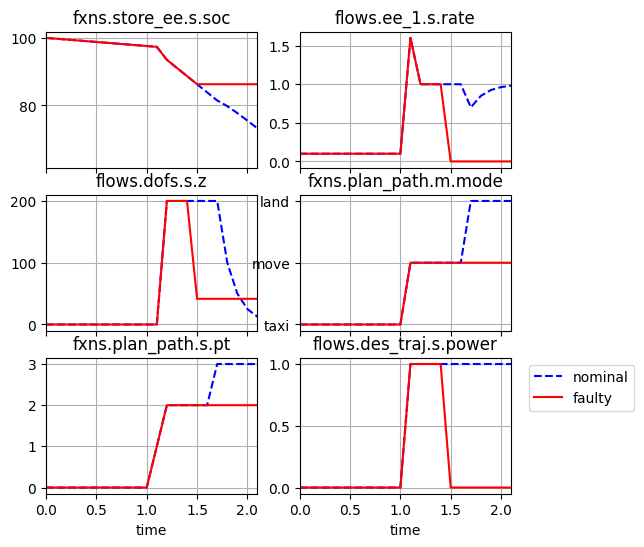
plot_env_with_traj_z(hist_fault, mdl)
(<Figure size 400x400 with 1 Axes>,
<Axes3D: title={'center': 'trajectory'}, xlabel='x', ylabel='y', zlabel='z'>)
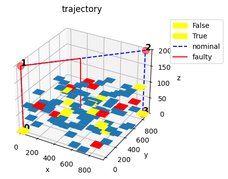
plot_env_with_traj(hist_fault, mdl)
(<Figure size 500x500 with 2 Axes>,
<Axes: title={'center': 'trajectory'}, xlabel='x', ylabel='y'>)
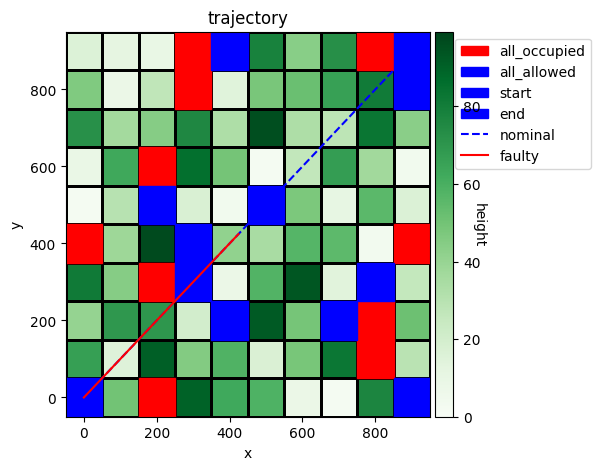
results_fault.faulty
tend.classify.rate: 1.0000000000000002e-06
tend.classify.cost: 2300.0
tend.classify.expected_cost: 230.00000000000003
tend.classify.repcost: 1500
tend.classify.unsafe_flight_time: 8
tend.classify.body_strikes: 0.0
tend.classify.head_strikes: 0.0
tend.classify.property_restrictions: 0
tend.classify.safecost: 800.0
tend.classify.landcost: 0
tend.classify.p_safety: 0.0
tend.classify.severities.hazardous: 0.0
tend.classify.severities.minor: 1.0000000000000002e-06
Systematic Fault Injection
Here we inject a large list of faults in the system and evaluate their relative consequences in terms of metrics calculated in classify:
from fmdtools.analyze.phases import PhaseMap, from_hist
phasemaps = from_hist(hist_nom, fxn_modephases=[], dt=mdl.sp.dt)
phasemaps['plan_path']
PhaseMap({np.str_('taxi'): [np.float64(0.0), np.float64(1.0)], np.str_('move'): [np.float64(1.1), np.float64(1.6)], np.str_('land'): [np.float64(1.7), np.float64(2.4)], 'taxi1': [np.float64(2.5), np.float64(2.6)]}, {})
from model_urban import make_move_quad
move_quad=make_move_quad(hist_nom, phasemaps['plan_path'].phases['move'])
move_quad
{'samp': 'quadrature',
'quad': {'nodes': [np.float64(-0.20000000000000018),
np.float64(0.1999999999999993)],
'weights': [0.006, 1.0]}}
Constructing the fault domain:
from fmdtools.sim.sample import FaultDomain, FaultSample
fd = FaultDomain(mdl)
fd.add_all_fxn_modes(*[f for f in mdl.fxns if f not in ['affect_dof', 'store_ee']])
fd.add_singlecomp_modes()
fd
FaultDomain with faults:
-('drone.fxns.manage_health', 'lostfunction')
-('drone.fxns.dist_ee', 'break')
-('drone.fxns.dist_ee', 'degr')
-('drone.fxns.dist_ee', 'short')
-('drone.fxns.ctl_dof', 'degctl')
-('drone.fxns.ctl_dof', 'noctl')
-('drone.fxns.plan_path', 'degloc')
-('drone.fxns.plan_path', 'noloc')
-('drone.fxns.plan_path.ca.comps.vision', 'lack_of_detection')
-('drone.fxns.plan_path.ca.comps.vision', 'undesired_detection')
-...more
Sampling the fault domain:
fs = FaultSample(fd, phasemap = phasemaps['plan_path'])
fs.add_fault_phases("move", method = "quad",
args=(move_quad['quad']['nodes'], move_quad['quad']['weights']))
fs
FaultSample of scenarios:
- drone_fxns_manage_health_lostfunction_t1p3
- drone_fxns_manage_health_lostfunction_t1p4
- drone_fxns_store_ee_lowcharge_t1p3
- drone_fxns_store_ee_lowcharge_t1p4
- drone_fxns_store_ee_nocharge_t1p3
- drone_fxns_store_ee_nocharge_t1p4
- drone_fxns_store_ee_ca_comps_s1p1_break_t1p3
- drone_fxns_store_ee_ca_comps_s1p1_break_t1p4
- drone_fxns_store_ee_ca_comps_s1p1_degr_t1p3
- drone_fxns_store_ee_ca_comps_s1p1_degr_t1p4
- ... (118 total)
fs.scenarios()
[SingleFaultScenario(sequence={1.3: Injection(faults={'drone.fxns.manage_health': ['lostfunction']}, disturbances={})}, times=(np.float64(1.3),), function='drone.fxns.manage_health', fault='lostfunction', rate=np.float64(8.946322067594433e-11), name='drone_fxns_manage_health_lostfunction_t1p3', time=np.float64(1.3), phase=np.str_('taxi')),
SingleFaultScenario(sequence={1.4: Injection(faults={'drone.fxns.manage_health': ['lostfunction']}, disturbances={})}, times=(np.float64(1.4),), function='drone.fxns.manage_health', fault='lostfunction', rate=np.float64(1.4910536779324056e-08), name='drone_fxns_manage_health_lostfunction_t1p4', time=np.float64(1.4), phase=np.str_('taxi')),
SingleFaultScenario(sequence={1.3: Injection(faults={'drone.fxns.store_ee': ['lowcharge']}, disturbances={})}, times=(np.float64(1.3),), function='drone.fxns.store_ee', fault='lowcharge', rate=np.float64(2.504970178926441e-07), name='drone_fxns_store_ee_lowcharge_t1p3', time=np.float64(1.3), phase=np.str_('taxi')),
SingleFaultScenario(sequence={1.4: Injection(faults={'drone.fxns.store_ee': ['lowcharge']}, disturbances={})}, times=(np.float64(1.4),), function='drone.fxns.store_ee', fault='lowcharge', rate=np.float64(4.1749502982107356e-05), name='drone_fxns_store_ee_lowcharge_t1p4', time=np.float64(1.4), phase=np.str_('taxi')),
SingleFaultScenario(sequence={1.3: Injection(faults={'drone.fxns.store_ee': ['nocharge']}, disturbances={})}, times=(np.float64(1.3),), function='drone.fxns.store_ee', fault='nocharge', rate=np.float64(7.157057654075547e-08), name='drone_fxns_store_ee_nocharge_t1p3', time=np.float64(1.3), phase=np.str_('taxi')),
SingleFaultScenario(sequence={1.4: Injection(faults={'drone.fxns.store_ee': ['nocharge']}, disturbances={})}, times=(np.float64(1.4),), function='drone.fxns.store_ee', fault='nocharge', rate=np.float64(1.1928429423459245e-05), name='drone_fxns_store_ee_nocharge_t1p4', time=np.float64(1.4), phase=np.str_('taxi')),
SingleFaultScenario(sequence={1.3: Injection(faults={'drone.fxns.store_ee.ca.comps.s1p1': ['break']}, disturbances={})}, times=(np.float64(1.3),), function='drone.fxns.store_ee.ca.comps.s1p1', fault='break', rate=np.float64(6.560636182902585e-10), name='drone_fxns_store_ee_ca_comps_s1p1_break_t1p3', time=np.float64(1.3), phase=np.str_('taxi')),
SingleFaultScenario(sequence={1.4: Injection(faults={'drone.fxns.store_ee.ca.comps.s1p1': ['break']}, disturbances={})}, times=(np.float64(1.4),), function='drone.fxns.store_ee.ca.comps.s1p1', fault='break', rate=np.float64(1.0934393638170977e-07), name='drone_fxns_store_ee_ca_comps_s1p1_break_t1p4', time=np.float64(1.4), phase=np.str_('taxi')),
SingleFaultScenario(sequence={1.3: Injection(faults={'drone.fxns.store_ee.ca.comps.s1p1': ['degr']}, disturbances={})}, times=(np.float64(1.3),), function='drone.fxns.store_ee.ca.comps.s1p1', fault='degr', rate=np.float64(6.560636182902585e-10), name='drone_fxns_store_ee_ca_comps_s1p1_degr_t1p3', time=np.float64(1.3), phase=np.str_('taxi')),
SingleFaultScenario(sequence={1.4: Injection(faults={'drone.fxns.store_ee.ca.comps.s1p1': ['degr']}, disturbances={})}, times=(np.float64(1.4),), function='drone.fxns.store_ee.ca.comps.s1p1', fault='degr', rate=np.float64(1.0934393638170977e-07), name='drone_fxns_store_ee_ca_comps_s1p1_degr_t1p4', time=np.float64(1.4), phase=np.str_('taxi')),
SingleFaultScenario(sequence={1.3: Injection(faults={'drone.fxns.store_ee.ca.comps.s1p1': ['lowcharge']}, disturbances={})}, times=(np.float64(1.3),), function='drone.fxns.store_ee.ca.comps.s1p1', fault='lowcharge', rate=np.float64(2.186878727634195e-09), name='drone_fxns_store_ee_ca_comps_s1p1_lowcharge_t1p3', time=np.float64(1.3), phase=np.str_('taxi')),
SingleFaultScenario(sequence={1.4: Injection(faults={'drone.fxns.store_ee.ca.comps.s1p1': ['lowcharge']}, disturbances={})}, times=(np.float64(1.4),), function='drone.fxns.store_ee.ca.comps.s1p1', fault='lowcharge', rate=np.float64(3.6447978793903254e-07), name='drone_fxns_store_ee_ca_comps_s1p1_lowcharge_t1p4', time=np.float64(1.4), phase=np.str_('taxi')),
SingleFaultScenario(sequence={1.3: Injection(faults={'drone.fxns.store_ee.ca.comps.s1p1': ['nocharge']}, disturbances={})}, times=(np.float64(1.3),), function='drone.fxns.store_ee.ca.comps.s1p1', fault='nocharge', rate=np.float64(4.59244532803181e-09), name='drone_fxns_store_ee_ca_comps_s1p1_nocharge_t1p3', time=np.float64(1.3), phase=np.str_('taxi')),
SingleFaultScenario(sequence={1.4: Injection(faults={'drone.fxns.store_ee.ca.comps.s1p1': ['nocharge']}, disturbances={})}, times=(np.float64(1.4),), function='drone.fxns.store_ee.ca.comps.s1p1', fault='nocharge', rate=np.float64(7.654075546719683e-07), name='drone_fxns_store_ee_ca_comps_s1p1_nocharge_t1p4', time=np.float64(1.4), phase=np.str_('taxi')),
SingleFaultScenario(sequence={1.3: Injection(faults={'drone.fxns.store_ee.ca.comps.s1p1': ['short']}, disturbances={})}, times=(np.float64(1.3),), function='drone.fxns.store_ee.ca.comps.s1p1', fault='short', rate=np.float64(6.560636182902585e-10), name='drone_fxns_store_ee_ca_comps_s1p1_short_t1p3', time=np.float64(1.3), phase=np.str_('taxi')),
SingleFaultScenario(sequence={1.4: Injection(faults={'drone.fxns.store_ee.ca.comps.s1p1': ['short']}, disturbances={})}, times=(np.float64(1.4),), function='drone.fxns.store_ee.ca.comps.s1p1', fault='short', rate=np.float64(1.0934393638170977e-07), name='drone_fxns_store_ee_ca_comps_s1p1_short_t1p4', time=np.float64(1.4), phase=np.str_('taxi')),
SingleFaultScenario(sequence={1.3: Injection(faults={'drone.fxns.dist_ee': ['break']}, disturbances={})}, times=(np.float64(1.3),), function='drone.fxns.dist_ee', fault='break', rate=np.float64(1.1928429423459246e-08), name='drone_fxns_dist_ee_break_t1p3', time=np.float64(1.3), phase=np.str_('taxi')),
SingleFaultScenario(sequence={1.4: Injection(faults={'drone.fxns.dist_ee': ['break']}, disturbances={})}, times=(np.float64(1.4),), function='drone.fxns.dist_ee', fault='break', rate=np.float64(1.988071570576541e-06), name='drone_fxns_dist_ee_break_t1p4', time=np.float64(1.4), phase=np.str_('taxi')),
SingleFaultScenario(sequence={1.3: Injection(faults={'drone.fxns.dist_ee': ['degr']}, disturbances={})}, times=(np.float64(1.3),), function='drone.fxns.dist_ee', fault='degr', rate=np.float64(2.982107355864811e-08), name='drone_fxns_dist_ee_degr_t1p3', time=np.float64(1.3), phase=np.str_('taxi')),
SingleFaultScenario(sequence={1.4: Injection(faults={'drone.fxns.dist_ee': ['degr']}, disturbances={})}, times=(np.float64(1.4),), function='drone.fxns.dist_ee', fault='degr', rate=np.float64(4.970178926441353e-06), name='drone_fxns_dist_ee_degr_t1p4', time=np.float64(1.4), phase=np.str_('taxi')),
SingleFaultScenario(sequence={1.3: Injection(faults={'drone.fxns.dist_ee': ['short']}, disturbances={})}, times=(np.float64(1.3),), function='drone.fxns.dist_ee', fault='short', rate=np.float64(1.7892644135188866e-08), name='drone_fxns_dist_ee_short_t1p3', time=np.float64(1.3), phase=np.str_('taxi')),
SingleFaultScenario(sequence={1.4: Injection(faults={'drone.fxns.dist_ee': ['short']}, disturbances={})}, times=(np.float64(1.4),), function='drone.fxns.dist_ee', fault='short', rate=np.float64(2.9821073558648112e-06), name='drone_fxns_dist_ee_short_t1p4', time=np.float64(1.4), phase=np.str_('taxi')),
SingleFaultScenario(sequence={1.3: Injection(faults={'drone.fxns.affect_dof.ca.comps.lf': ['ctlbreak']}, disturbances={})}, times=(np.float64(1.3),), function='drone.fxns.affect_dof.ca.comps.lf', fault='ctlbreak', rate=np.float64(1.1928429423459246e-08), name='drone_fxns_affect_dof_ca_comps_lf_ctlbreak_t1p3', time=np.float64(1.3), phase=np.str_('taxi')),
SingleFaultScenario(sequence={1.4: Injection(faults={'drone.fxns.affect_dof.ca.comps.lf': ['ctlbreak']}, disturbances={})}, times=(np.float64(1.4),), function='drone.fxns.affect_dof.ca.comps.lf', fault='ctlbreak', rate=np.float64(1.988071570576541e-06), name='drone_fxns_affect_dof_ca_comps_lf_ctlbreak_t1p4', time=np.float64(1.4), phase=np.str_('taxi')),
SingleFaultScenario(sequence={1.3: Injection(faults={'drone.fxns.affect_dof.ca.comps.lf': ['ctldn']}, disturbances={})}, times=(np.float64(1.3),), function='drone.fxns.affect_dof.ca.comps.lf', fault='ctldn', rate=np.float64(1.1928429423459246e-08), name='drone_fxns_affect_dof_ca_comps_lf_ctldn_t1p3', time=np.float64(1.3), phase=np.str_('taxi')),
SingleFaultScenario(sequence={1.4: Injection(faults={'drone.fxns.affect_dof.ca.comps.lf': ['ctldn']}, disturbances={})}, times=(np.float64(1.4),), function='drone.fxns.affect_dof.ca.comps.lf', fault='ctldn', rate=np.float64(1.988071570576541e-06), name='drone_fxns_affect_dof_ca_comps_lf_ctldn_t1p4', time=np.float64(1.4), phase=np.str_('taxi')),
SingleFaultScenario(sequence={1.3: Injection(faults={'drone.fxns.affect_dof.ca.comps.lf': ['ctlup']}, disturbances={})}, times=(np.float64(1.3),), function='drone.fxns.affect_dof.ca.comps.lf', fault='ctlup', rate=np.float64(1.1928429423459246e-08), name='drone_fxns_affect_dof_ca_comps_lf_ctlup_t1p3', time=np.float64(1.3), phase=np.str_('taxi')),
SingleFaultScenario(sequence={1.4: Injection(faults={'drone.fxns.affect_dof.ca.comps.lf': ['ctlup']}, disturbances={})}, times=(np.float64(1.4),), function='drone.fxns.affect_dof.ca.comps.lf', fault='ctlup', rate=np.float64(1.988071570576541e-06), name='drone_fxns_affect_dof_ca_comps_lf_ctlup_t1p4', time=np.float64(1.4), phase=np.str_('taxi')),
SingleFaultScenario(sequence={1.3: Injection(faults={'drone.fxns.affect_dof.ca.comps.lf': ['mechbreak']}, disturbances={})}, times=(np.float64(1.3),), function='drone.fxns.affect_dof.ca.comps.lf', fault='mechbreak', rate=np.float64(5.964214711729623e-09), name='drone_fxns_affect_dof_ca_comps_lf_mechbreak_t1p3', time=np.float64(1.3), phase=np.str_('taxi')),
SingleFaultScenario(sequence={1.4: Injection(faults={'drone.fxns.affect_dof.ca.comps.lf': ['mechbreak']}, disturbances={})}, times=(np.float64(1.4),), function='drone.fxns.affect_dof.ca.comps.lf', fault='mechbreak', rate=np.float64(9.940357852882705e-07), name='drone_fxns_affect_dof_ca_comps_lf_mechbreak_t1p4', time=np.float64(1.4), phase=np.str_('taxi')),
SingleFaultScenario(sequence={1.3: Injection(faults={'drone.fxns.affect_dof.ca.comps.lf': ['mechfriction']}, disturbances={})}, times=(np.float64(1.3),), function='drone.fxns.affect_dof.ca.comps.lf', fault='mechfriction', rate=np.float64(2.9821073558648116e-09), name='drone_fxns_affect_dof_ca_comps_lf_mechfriction_t1p3', time=np.float64(1.3), phase=np.str_('taxi')),
SingleFaultScenario(sequence={1.4: Injection(faults={'drone.fxns.affect_dof.ca.comps.lf': ['mechfriction']}, disturbances={})}, times=(np.float64(1.4),), function='drone.fxns.affect_dof.ca.comps.lf', fault='mechfriction', rate=np.float64(4.970178926441353e-07), name='drone_fxns_affect_dof_ca_comps_lf_mechfriction_t1p4', time=np.float64(1.4), phase=np.str_('taxi')),
SingleFaultScenario(sequence={1.3: Injection(faults={'drone.fxns.affect_dof.ca.comps.lf': ['openc']}, disturbances={})}, times=(np.float64(1.3),), function='drone.fxns.affect_dof.ca.comps.lf', fault='openc', rate=np.float64(5.964214711729623e-09), name='drone_fxns_affect_dof_ca_comps_lf_openc_t1p3', time=np.float64(1.3), phase=np.str_('taxi')),
SingleFaultScenario(sequence={1.4: Injection(faults={'drone.fxns.affect_dof.ca.comps.lf': ['openc']}, disturbances={})}, times=(np.float64(1.4),), function='drone.fxns.affect_dof.ca.comps.lf', fault='openc', rate=np.float64(9.940357852882705e-07), name='drone_fxns_affect_dof_ca_comps_lf_openc_t1p4', time=np.float64(1.4), phase=np.str_('taxi')),
SingleFaultScenario(sequence={1.3: Injection(faults={'drone.fxns.affect_dof.ca.comps.lf': ['propbreak']}, disturbances={})}, times=(np.float64(1.3),), function='drone.fxns.affect_dof.ca.comps.lf', fault='propbreak', rate=np.float64(1.7892644135188868e-09), name='drone_fxns_affect_dof_ca_comps_lf_propbreak_t1p3', time=np.float64(1.3), phase=np.str_('taxi')),
SingleFaultScenario(sequence={1.4: Injection(faults={'drone.fxns.affect_dof.ca.comps.lf': ['propbreak']}, disturbances={})}, times=(np.float64(1.4),), function='drone.fxns.affect_dof.ca.comps.lf', fault='propbreak', rate=np.float64(2.9821073558648115e-07), name='drone_fxns_affect_dof_ca_comps_lf_propbreak_t1p4', time=np.float64(1.4), phase=np.str_('taxi')),
SingleFaultScenario(sequence={1.3: Injection(faults={'drone.fxns.affect_dof.ca.comps.lf': ['propstuck']}, disturbances={})}, times=(np.float64(1.3),), function='drone.fxns.affect_dof.ca.comps.lf', fault='propstuck', rate=np.float64(1.1928429423459246e-09), name='drone_fxns_affect_dof_ca_comps_lf_propstuck_t1p3', time=np.float64(1.3), phase=np.str_('taxi')),
SingleFaultScenario(sequence={1.4: Injection(faults={'drone.fxns.affect_dof.ca.comps.lf': ['propstuck']}, disturbances={})}, times=(np.float64(1.4),), function='drone.fxns.affect_dof.ca.comps.lf', fault='propstuck', rate=np.float64(1.988071570576541e-07), name='drone_fxns_affect_dof_ca_comps_lf_propstuck_t1p4', time=np.float64(1.4), phase=np.str_('taxi')),
SingleFaultScenario(sequence={1.3: Injection(faults={'drone.fxns.affect_dof.ca.comps.lf': ['propwarp']}, disturbances={})}, times=(np.float64(1.3),), function='drone.fxns.affect_dof.ca.comps.lf', fault='propwarp', rate=np.float64(5.964214711729623e-10), name='drone_fxns_affect_dof_ca_comps_lf_propwarp_t1p3', time=np.float64(1.3), phase=np.str_('taxi')),
SingleFaultScenario(sequence={1.4: Injection(faults={'drone.fxns.affect_dof.ca.comps.lf': ['propwarp']}, disturbances={})}, times=(np.float64(1.4),), function='drone.fxns.affect_dof.ca.comps.lf', fault='propwarp', rate=np.float64(9.940357852882705e-08), name='drone_fxns_affect_dof_ca_comps_lf_propwarp_t1p4', time=np.float64(1.4), phase=np.str_('taxi')),
SingleFaultScenario(sequence={1.3: Injection(faults={'drone.fxns.affect_dof.ca.comps.lf': ['short']}, disturbances={})}, times=(np.float64(1.3),), function='drone.fxns.affect_dof.ca.comps.lf', fault='short', rate=np.float64(5.964214711729623e-09), name='drone_fxns_affect_dof_ca_comps_lf_short_t1p3', time=np.float64(1.3), phase=np.str_('taxi')),
SingleFaultScenario(sequence={1.4: Injection(faults={'drone.fxns.affect_dof.ca.comps.lf': ['short']}, disturbances={})}, times=(np.float64(1.4),), function='drone.fxns.affect_dof.ca.comps.lf', fault='short', rate=np.float64(9.940357852882705e-07), name='drone_fxns_affect_dof_ca_comps_lf_short_t1p4', time=np.float64(1.4), phase=np.str_('taxi')),
SingleFaultScenario(sequence={1.3: Injection(faults={'drone.fxns.affect_dof.ca.comps.lr': ['ctlbreak']}, disturbances={})}, times=(np.float64(1.3),), function='drone.fxns.affect_dof.ca.comps.lr', fault='ctlbreak', rate=np.float64(1.1928429423459246e-08), name='drone_fxns_affect_dof_ca_comps_lr_ctlbreak_t1p3', time=np.float64(1.3), phase=np.str_('taxi')),
SingleFaultScenario(sequence={1.4: Injection(faults={'drone.fxns.affect_dof.ca.comps.lr': ['ctlbreak']}, disturbances={})}, times=(np.float64(1.4),), function='drone.fxns.affect_dof.ca.comps.lr', fault='ctlbreak', rate=np.float64(1.988071570576541e-06), name='drone_fxns_affect_dof_ca_comps_lr_ctlbreak_t1p4', time=np.float64(1.4), phase=np.str_('taxi')),
SingleFaultScenario(sequence={1.3: Injection(faults={'drone.fxns.affect_dof.ca.comps.lr': ['ctldn']}, disturbances={})}, times=(np.float64(1.3),), function='drone.fxns.affect_dof.ca.comps.lr', fault='ctldn', rate=np.float64(1.1928429423459246e-08), name='drone_fxns_affect_dof_ca_comps_lr_ctldn_t1p3', time=np.float64(1.3), phase=np.str_('taxi')),
SingleFaultScenario(sequence={1.4: Injection(faults={'drone.fxns.affect_dof.ca.comps.lr': ['ctldn']}, disturbances={})}, times=(np.float64(1.4),), function='drone.fxns.affect_dof.ca.comps.lr', fault='ctldn', rate=np.float64(1.988071570576541e-06), name='drone_fxns_affect_dof_ca_comps_lr_ctldn_t1p4', time=np.float64(1.4), phase=np.str_('taxi')),
SingleFaultScenario(sequence={1.3: Injection(faults={'drone.fxns.affect_dof.ca.comps.lr': ['ctlup']}, disturbances={})}, times=(np.float64(1.3),), function='drone.fxns.affect_dof.ca.comps.lr', fault='ctlup', rate=np.float64(1.1928429423459246e-08), name='drone_fxns_affect_dof_ca_comps_lr_ctlup_t1p3', time=np.float64(1.3), phase=np.str_('taxi')),
SingleFaultScenario(sequence={1.4: Injection(faults={'drone.fxns.affect_dof.ca.comps.lr': ['ctlup']}, disturbances={})}, times=(np.float64(1.4),), function='drone.fxns.affect_dof.ca.comps.lr', fault='ctlup', rate=np.float64(1.988071570576541e-06), name='drone_fxns_affect_dof_ca_comps_lr_ctlup_t1p4', time=np.float64(1.4), phase=np.str_('taxi')),
SingleFaultScenario(sequence={1.3: Injection(faults={'drone.fxns.affect_dof.ca.comps.lr': ['mechbreak']}, disturbances={})}, times=(np.float64(1.3),), function='drone.fxns.affect_dof.ca.comps.lr', fault='mechbreak', rate=np.float64(5.964214711729623e-09), name='drone_fxns_affect_dof_ca_comps_lr_mechbreak_t1p3', time=np.float64(1.3), phase=np.str_('taxi')),
SingleFaultScenario(sequence={1.4: Injection(faults={'drone.fxns.affect_dof.ca.comps.lr': ['mechbreak']}, disturbances={})}, times=(np.float64(1.4),), function='drone.fxns.affect_dof.ca.comps.lr', fault='mechbreak', rate=np.float64(9.940357852882705e-07), name='drone_fxns_affect_dof_ca_comps_lr_mechbreak_t1p4', time=np.float64(1.4), phase=np.str_('taxi')),
SingleFaultScenario(sequence={1.3: Injection(faults={'drone.fxns.affect_dof.ca.comps.lr': ['mechfriction']}, disturbances={})}, times=(np.float64(1.3),), function='drone.fxns.affect_dof.ca.comps.lr', fault='mechfriction', rate=np.float64(2.9821073558648116e-09), name='drone_fxns_affect_dof_ca_comps_lr_mechfriction_t1p3', time=np.float64(1.3), phase=np.str_('taxi')),
SingleFaultScenario(sequence={1.4: Injection(faults={'drone.fxns.affect_dof.ca.comps.lr': ['mechfriction']}, disturbances={})}, times=(np.float64(1.4),), function='drone.fxns.affect_dof.ca.comps.lr', fault='mechfriction', rate=np.float64(4.970178926441353e-07), name='drone_fxns_affect_dof_ca_comps_lr_mechfriction_t1p4', time=np.float64(1.4), phase=np.str_('taxi')),
SingleFaultScenario(sequence={1.3: Injection(faults={'drone.fxns.affect_dof.ca.comps.lr': ['openc']}, disturbances={})}, times=(np.float64(1.3),), function='drone.fxns.affect_dof.ca.comps.lr', fault='openc', rate=np.float64(5.964214711729623e-09), name='drone_fxns_affect_dof_ca_comps_lr_openc_t1p3', time=np.float64(1.3), phase=np.str_('taxi')),
SingleFaultScenario(sequence={1.4: Injection(faults={'drone.fxns.affect_dof.ca.comps.lr': ['openc']}, disturbances={})}, times=(np.float64(1.4),), function='drone.fxns.affect_dof.ca.comps.lr', fault='openc', rate=np.float64(9.940357852882705e-07), name='drone_fxns_affect_dof_ca_comps_lr_openc_t1p4', time=np.float64(1.4), phase=np.str_('taxi')),
SingleFaultScenario(sequence={1.3: Injection(faults={'drone.fxns.affect_dof.ca.comps.lr': ['propbreak']}, disturbances={})}, times=(np.float64(1.3),), function='drone.fxns.affect_dof.ca.comps.lr', fault='propbreak', rate=np.float64(1.7892644135188868e-09), name='drone_fxns_affect_dof_ca_comps_lr_propbreak_t1p3', time=np.float64(1.3), phase=np.str_('taxi')),
SingleFaultScenario(sequence={1.4: Injection(faults={'drone.fxns.affect_dof.ca.comps.lr': ['propbreak']}, disturbances={})}, times=(np.float64(1.4),), function='drone.fxns.affect_dof.ca.comps.lr', fault='propbreak', rate=np.float64(2.9821073558648115e-07), name='drone_fxns_affect_dof_ca_comps_lr_propbreak_t1p4', time=np.float64(1.4), phase=np.str_('taxi')),
SingleFaultScenario(sequence={1.3: Injection(faults={'drone.fxns.affect_dof.ca.comps.lr': ['propstuck']}, disturbances={})}, times=(np.float64(1.3),), function='drone.fxns.affect_dof.ca.comps.lr', fault='propstuck', rate=np.float64(1.1928429423459246e-09), name='drone_fxns_affect_dof_ca_comps_lr_propstuck_t1p3', time=np.float64(1.3), phase=np.str_('taxi')),
SingleFaultScenario(sequence={1.4: Injection(faults={'drone.fxns.affect_dof.ca.comps.lr': ['propstuck']}, disturbances={})}, times=(np.float64(1.4),), function='drone.fxns.affect_dof.ca.comps.lr', fault='propstuck', rate=np.float64(1.988071570576541e-07), name='drone_fxns_affect_dof_ca_comps_lr_propstuck_t1p4', time=np.float64(1.4), phase=np.str_('taxi')),
SingleFaultScenario(sequence={1.3: Injection(faults={'drone.fxns.affect_dof.ca.comps.lr': ['propwarp']}, disturbances={})}, times=(np.float64(1.3),), function='drone.fxns.affect_dof.ca.comps.lr', fault='propwarp', rate=np.float64(5.964214711729623e-10), name='drone_fxns_affect_dof_ca_comps_lr_propwarp_t1p3', time=np.float64(1.3), phase=np.str_('taxi')),
SingleFaultScenario(sequence={1.4: Injection(faults={'drone.fxns.affect_dof.ca.comps.lr': ['propwarp']}, disturbances={})}, times=(np.float64(1.4),), function='drone.fxns.affect_dof.ca.comps.lr', fault='propwarp', rate=np.float64(9.940357852882705e-08), name='drone_fxns_affect_dof_ca_comps_lr_propwarp_t1p4', time=np.float64(1.4), phase=np.str_('taxi')),
SingleFaultScenario(sequence={1.3: Injection(faults={'drone.fxns.affect_dof.ca.comps.lr': ['short']}, disturbances={})}, times=(np.float64(1.3),), function='drone.fxns.affect_dof.ca.comps.lr', fault='short', rate=np.float64(5.964214711729623e-09), name='drone_fxns_affect_dof_ca_comps_lr_short_t1p3', time=np.float64(1.3), phase=np.str_('taxi')),
SingleFaultScenario(sequence={1.4: Injection(faults={'drone.fxns.affect_dof.ca.comps.lr': ['short']}, disturbances={})}, times=(np.float64(1.4),), function='drone.fxns.affect_dof.ca.comps.lr', fault='short', rate=np.float64(9.940357852882705e-07), name='drone_fxns_affect_dof_ca_comps_lr_short_t1p4', time=np.float64(1.4), phase=np.str_('taxi')),
SingleFaultScenario(sequence={1.3: Injection(faults={'drone.fxns.affect_dof.ca.comps.rf': ['ctlbreak']}, disturbances={})}, times=(np.float64(1.3),), function='drone.fxns.affect_dof.ca.comps.rf', fault='ctlbreak', rate=np.float64(1.1928429423459246e-08), name='drone_fxns_affect_dof_ca_comps_rf_ctlbreak_t1p3', time=np.float64(1.3), phase=np.str_('taxi')),
SingleFaultScenario(sequence={1.4: Injection(faults={'drone.fxns.affect_dof.ca.comps.rf': ['ctlbreak']}, disturbances={})}, times=(np.float64(1.4),), function='drone.fxns.affect_dof.ca.comps.rf', fault='ctlbreak', rate=np.float64(1.988071570576541e-06), name='drone_fxns_affect_dof_ca_comps_rf_ctlbreak_t1p4', time=np.float64(1.4), phase=np.str_('taxi')),
SingleFaultScenario(sequence={1.3: Injection(faults={'drone.fxns.affect_dof.ca.comps.rf': ['ctldn']}, disturbances={})}, times=(np.float64(1.3),), function='drone.fxns.affect_dof.ca.comps.rf', fault='ctldn', rate=np.float64(1.1928429423459246e-08), name='drone_fxns_affect_dof_ca_comps_rf_ctldn_t1p3', time=np.float64(1.3), phase=np.str_('taxi')),
SingleFaultScenario(sequence={1.4: Injection(faults={'drone.fxns.affect_dof.ca.comps.rf': ['ctldn']}, disturbances={})}, times=(np.float64(1.4),), function='drone.fxns.affect_dof.ca.comps.rf', fault='ctldn', rate=np.float64(1.988071570576541e-06), name='drone_fxns_affect_dof_ca_comps_rf_ctldn_t1p4', time=np.float64(1.4), phase=np.str_('taxi')),
SingleFaultScenario(sequence={1.3: Injection(faults={'drone.fxns.affect_dof.ca.comps.rf': ['ctlup']}, disturbances={})}, times=(np.float64(1.3),), function='drone.fxns.affect_dof.ca.comps.rf', fault='ctlup', rate=np.float64(1.1928429423459246e-08), name='drone_fxns_affect_dof_ca_comps_rf_ctlup_t1p3', time=np.float64(1.3), phase=np.str_('taxi')),
SingleFaultScenario(sequence={1.4: Injection(faults={'drone.fxns.affect_dof.ca.comps.rf': ['ctlup']}, disturbances={})}, times=(np.float64(1.4),), function='drone.fxns.affect_dof.ca.comps.rf', fault='ctlup', rate=np.float64(1.988071570576541e-06), name='drone_fxns_affect_dof_ca_comps_rf_ctlup_t1p4', time=np.float64(1.4), phase=np.str_('taxi')),
SingleFaultScenario(sequence={1.3: Injection(faults={'drone.fxns.affect_dof.ca.comps.rf': ['mechbreak']}, disturbances={})}, times=(np.float64(1.3),), function='drone.fxns.affect_dof.ca.comps.rf', fault='mechbreak', rate=np.float64(5.964214711729623e-09), name='drone_fxns_affect_dof_ca_comps_rf_mechbreak_t1p3', time=np.float64(1.3), phase=np.str_('taxi')),
SingleFaultScenario(sequence={1.4: Injection(faults={'drone.fxns.affect_dof.ca.comps.rf': ['mechbreak']}, disturbances={})}, times=(np.float64(1.4),), function='drone.fxns.affect_dof.ca.comps.rf', fault='mechbreak', rate=np.float64(9.940357852882705e-07), name='drone_fxns_affect_dof_ca_comps_rf_mechbreak_t1p4', time=np.float64(1.4), phase=np.str_('taxi')),
SingleFaultScenario(sequence={1.3: Injection(faults={'drone.fxns.affect_dof.ca.comps.rf': ['mechfriction']}, disturbances={})}, times=(np.float64(1.3),), function='drone.fxns.affect_dof.ca.comps.rf', fault='mechfriction', rate=np.float64(2.9821073558648116e-09), name='drone_fxns_affect_dof_ca_comps_rf_mechfriction_t1p3', time=np.float64(1.3), phase=np.str_('taxi')),
SingleFaultScenario(sequence={1.4: Injection(faults={'drone.fxns.affect_dof.ca.comps.rf': ['mechfriction']}, disturbances={})}, times=(np.float64(1.4),), function='drone.fxns.affect_dof.ca.comps.rf', fault='mechfriction', rate=np.float64(4.970178926441353e-07), name='drone_fxns_affect_dof_ca_comps_rf_mechfriction_t1p4', time=np.float64(1.4), phase=np.str_('taxi')),
SingleFaultScenario(sequence={1.3: Injection(faults={'drone.fxns.affect_dof.ca.comps.rf': ['openc']}, disturbances={})}, times=(np.float64(1.3),), function='drone.fxns.affect_dof.ca.comps.rf', fault='openc', rate=np.float64(5.964214711729623e-09), name='drone_fxns_affect_dof_ca_comps_rf_openc_t1p3', time=np.float64(1.3), phase=np.str_('taxi')),
SingleFaultScenario(sequence={1.4: Injection(faults={'drone.fxns.affect_dof.ca.comps.rf': ['openc']}, disturbances={})}, times=(np.float64(1.4),), function='drone.fxns.affect_dof.ca.comps.rf', fault='openc', rate=np.float64(9.940357852882705e-07), name='drone_fxns_affect_dof_ca_comps_rf_openc_t1p4', time=np.float64(1.4), phase=np.str_('taxi')),
SingleFaultScenario(sequence={1.3: Injection(faults={'drone.fxns.affect_dof.ca.comps.rf': ['propbreak']}, disturbances={})}, times=(np.float64(1.3),), function='drone.fxns.affect_dof.ca.comps.rf', fault='propbreak', rate=np.float64(1.7892644135188868e-09), name='drone_fxns_affect_dof_ca_comps_rf_propbreak_t1p3', time=np.float64(1.3), phase=np.str_('taxi')),
SingleFaultScenario(sequence={1.4: Injection(faults={'drone.fxns.affect_dof.ca.comps.rf': ['propbreak']}, disturbances={})}, times=(np.float64(1.4),), function='drone.fxns.affect_dof.ca.comps.rf', fault='propbreak', rate=np.float64(2.9821073558648115e-07), name='drone_fxns_affect_dof_ca_comps_rf_propbreak_t1p4', time=np.float64(1.4), phase=np.str_('taxi')),
SingleFaultScenario(sequence={1.3: Injection(faults={'drone.fxns.affect_dof.ca.comps.rf': ['propstuck']}, disturbances={})}, times=(np.float64(1.3),), function='drone.fxns.affect_dof.ca.comps.rf', fault='propstuck', rate=np.float64(1.1928429423459246e-09), name='drone_fxns_affect_dof_ca_comps_rf_propstuck_t1p3', time=np.float64(1.3), phase=np.str_('taxi')),
SingleFaultScenario(sequence={1.4: Injection(faults={'drone.fxns.affect_dof.ca.comps.rf': ['propstuck']}, disturbances={})}, times=(np.float64(1.4),), function='drone.fxns.affect_dof.ca.comps.rf', fault='propstuck', rate=np.float64(1.988071570576541e-07), name='drone_fxns_affect_dof_ca_comps_rf_propstuck_t1p4', time=np.float64(1.4), phase=np.str_('taxi')),
SingleFaultScenario(sequence={1.3: Injection(faults={'drone.fxns.affect_dof.ca.comps.rf': ['propwarp']}, disturbances={})}, times=(np.float64(1.3),), function='drone.fxns.affect_dof.ca.comps.rf', fault='propwarp', rate=np.float64(5.964214711729623e-10), name='drone_fxns_affect_dof_ca_comps_rf_propwarp_t1p3', time=np.float64(1.3), phase=np.str_('taxi')),
SingleFaultScenario(sequence={1.4: Injection(faults={'drone.fxns.affect_dof.ca.comps.rf': ['propwarp']}, disturbances={})}, times=(np.float64(1.4),), function='drone.fxns.affect_dof.ca.comps.rf', fault='propwarp', rate=np.float64(9.940357852882705e-08), name='drone_fxns_affect_dof_ca_comps_rf_propwarp_t1p4', time=np.float64(1.4), phase=np.str_('taxi')),
SingleFaultScenario(sequence={1.3: Injection(faults={'drone.fxns.affect_dof.ca.comps.rf': ['short']}, disturbances={})}, times=(np.float64(1.3),), function='drone.fxns.affect_dof.ca.comps.rf', fault='short', rate=np.float64(5.964214711729623e-09), name='drone_fxns_affect_dof_ca_comps_rf_short_t1p3', time=np.float64(1.3), phase=np.str_('taxi')),
SingleFaultScenario(sequence={1.4: Injection(faults={'drone.fxns.affect_dof.ca.comps.rf': ['short']}, disturbances={})}, times=(np.float64(1.4),), function='drone.fxns.affect_dof.ca.comps.rf', fault='short', rate=np.float64(9.940357852882705e-07), name='drone_fxns_affect_dof_ca_comps_rf_short_t1p4', time=np.float64(1.4), phase=np.str_('taxi')),
SingleFaultScenario(sequence={1.3: Injection(faults={'drone.fxns.affect_dof.ca.comps.rr': ['ctlbreak']}, disturbances={})}, times=(np.float64(1.3),), function='drone.fxns.affect_dof.ca.comps.rr', fault='ctlbreak', rate=np.float64(1.1928429423459246e-08), name='drone_fxns_affect_dof_ca_comps_rr_ctlbreak_t1p3', time=np.float64(1.3), phase=np.str_('taxi')),
SingleFaultScenario(sequence={1.4: Injection(faults={'drone.fxns.affect_dof.ca.comps.rr': ['ctlbreak']}, disturbances={})}, times=(np.float64(1.4),), function='drone.fxns.affect_dof.ca.comps.rr', fault='ctlbreak', rate=np.float64(1.988071570576541e-06), name='drone_fxns_affect_dof_ca_comps_rr_ctlbreak_t1p4', time=np.float64(1.4), phase=np.str_('taxi')),
SingleFaultScenario(sequence={1.3: Injection(faults={'drone.fxns.affect_dof.ca.comps.rr': ['ctldn']}, disturbances={})}, times=(np.float64(1.3),), function='drone.fxns.affect_dof.ca.comps.rr', fault='ctldn', rate=np.float64(1.1928429423459246e-08), name='drone_fxns_affect_dof_ca_comps_rr_ctldn_t1p3', time=np.float64(1.3), phase=np.str_('taxi')),
SingleFaultScenario(sequence={1.4: Injection(faults={'drone.fxns.affect_dof.ca.comps.rr': ['ctldn']}, disturbances={})}, times=(np.float64(1.4),), function='drone.fxns.affect_dof.ca.comps.rr', fault='ctldn', rate=np.float64(1.988071570576541e-06), name='drone_fxns_affect_dof_ca_comps_rr_ctldn_t1p4', time=np.float64(1.4), phase=np.str_('taxi')),
SingleFaultScenario(sequence={1.3: Injection(faults={'drone.fxns.affect_dof.ca.comps.rr': ['ctlup']}, disturbances={})}, times=(np.float64(1.3),), function='drone.fxns.affect_dof.ca.comps.rr', fault='ctlup', rate=np.float64(1.1928429423459246e-08), name='drone_fxns_affect_dof_ca_comps_rr_ctlup_t1p3', time=np.float64(1.3), phase=np.str_('taxi')),
SingleFaultScenario(sequence={1.4: Injection(faults={'drone.fxns.affect_dof.ca.comps.rr': ['ctlup']}, disturbances={})}, times=(np.float64(1.4),), function='drone.fxns.affect_dof.ca.comps.rr', fault='ctlup', rate=np.float64(1.988071570576541e-06), name='drone_fxns_affect_dof_ca_comps_rr_ctlup_t1p4', time=np.float64(1.4), phase=np.str_('taxi')),
SingleFaultScenario(sequence={1.3: Injection(faults={'drone.fxns.affect_dof.ca.comps.rr': ['mechbreak']}, disturbances={})}, times=(np.float64(1.3),), function='drone.fxns.affect_dof.ca.comps.rr', fault='mechbreak', rate=np.float64(5.964214711729623e-09), name='drone_fxns_affect_dof_ca_comps_rr_mechbreak_t1p3', time=np.float64(1.3), phase=np.str_('taxi')),
SingleFaultScenario(sequence={1.4: Injection(faults={'drone.fxns.affect_dof.ca.comps.rr': ['mechbreak']}, disturbances={})}, times=(np.float64(1.4),), function='drone.fxns.affect_dof.ca.comps.rr', fault='mechbreak', rate=np.float64(9.940357852882705e-07), name='drone_fxns_affect_dof_ca_comps_rr_mechbreak_t1p4', time=np.float64(1.4), phase=np.str_('taxi')),
SingleFaultScenario(sequence={1.3: Injection(faults={'drone.fxns.affect_dof.ca.comps.rr': ['mechfriction']}, disturbances={})}, times=(np.float64(1.3),), function='drone.fxns.affect_dof.ca.comps.rr', fault='mechfriction', rate=np.float64(2.9821073558648116e-09), name='drone_fxns_affect_dof_ca_comps_rr_mechfriction_t1p3', time=np.float64(1.3), phase=np.str_('taxi')),
SingleFaultScenario(sequence={1.4: Injection(faults={'drone.fxns.affect_dof.ca.comps.rr': ['mechfriction']}, disturbances={})}, times=(np.float64(1.4),), function='drone.fxns.affect_dof.ca.comps.rr', fault='mechfriction', rate=np.float64(4.970178926441353e-07), name='drone_fxns_affect_dof_ca_comps_rr_mechfriction_t1p4', time=np.float64(1.4), phase=np.str_('taxi')),
SingleFaultScenario(sequence={1.3: Injection(faults={'drone.fxns.affect_dof.ca.comps.rr': ['openc']}, disturbances={})}, times=(np.float64(1.3),), function='drone.fxns.affect_dof.ca.comps.rr', fault='openc', rate=np.float64(5.964214711729623e-09), name='drone_fxns_affect_dof_ca_comps_rr_openc_t1p3', time=np.float64(1.3), phase=np.str_('taxi')),
SingleFaultScenario(sequence={1.4: Injection(faults={'drone.fxns.affect_dof.ca.comps.rr': ['openc']}, disturbances={})}, times=(np.float64(1.4),), function='drone.fxns.affect_dof.ca.comps.rr', fault='openc', rate=np.float64(9.940357852882705e-07), name='drone_fxns_affect_dof_ca_comps_rr_openc_t1p4', time=np.float64(1.4), phase=np.str_('taxi')),
SingleFaultScenario(sequence={1.3: Injection(faults={'drone.fxns.affect_dof.ca.comps.rr': ['propbreak']}, disturbances={})}, times=(np.float64(1.3),), function='drone.fxns.affect_dof.ca.comps.rr', fault='propbreak', rate=np.float64(1.7892644135188868e-09), name='drone_fxns_affect_dof_ca_comps_rr_propbreak_t1p3', time=np.float64(1.3), phase=np.str_('taxi')),
SingleFaultScenario(sequence={1.4: Injection(faults={'drone.fxns.affect_dof.ca.comps.rr': ['propbreak']}, disturbances={})}, times=(np.float64(1.4),), function='drone.fxns.affect_dof.ca.comps.rr', fault='propbreak', rate=np.float64(2.9821073558648115e-07), name='drone_fxns_affect_dof_ca_comps_rr_propbreak_t1p4', time=np.float64(1.4), phase=np.str_('taxi')),
SingleFaultScenario(sequence={1.3: Injection(faults={'drone.fxns.affect_dof.ca.comps.rr': ['propstuck']}, disturbances={})}, times=(np.float64(1.3),), function='drone.fxns.affect_dof.ca.comps.rr', fault='propstuck', rate=np.float64(1.1928429423459246e-09), name='drone_fxns_affect_dof_ca_comps_rr_propstuck_t1p3', time=np.float64(1.3), phase=np.str_('taxi')),
SingleFaultScenario(sequence={1.4: Injection(faults={'drone.fxns.affect_dof.ca.comps.rr': ['propstuck']}, disturbances={})}, times=(np.float64(1.4),), function='drone.fxns.affect_dof.ca.comps.rr', fault='propstuck', rate=np.float64(1.988071570576541e-07), name='drone_fxns_affect_dof_ca_comps_rr_propstuck_t1p4', time=np.float64(1.4), phase=np.str_('taxi')),
SingleFaultScenario(sequence={1.3: Injection(faults={'drone.fxns.affect_dof.ca.comps.rr': ['propwarp']}, disturbances={})}, times=(np.float64(1.3),), function='drone.fxns.affect_dof.ca.comps.rr', fault='propwarp', rate=np.float64(5.964214711729623e-10), name='drone_fxns_affect_dof_ca_comps_rr_propwarp_t1p3', time=np.float64(1.3), phase=np.str_('taxi')),
SingleFaultScenario(sequence={1.4: Injection(faults={'drone.fxns.affect_dof.ca.comps.rr': ['propwarp']}, disturbances={})}, times=(np.float64(1.4),), function='drone.fxns.affect_dof.ca.comps.rr', fault='propwarp', rate=np.float64(9.940357852882705e-08), name='drone_fxns_affect_dof_ca_comps_rr_propwarp_t1p4', time=np.float64(1.4), phase=np.str_('taxi')),
SingleFaultScenario(sequence={1.3: Injection(faults={'drone.fxns.affect_dof.ca.comps.rr': ['short']}, disturbances={})}, times=(np.float64(1.3),), function='drone.fxns.affect_dof.ca.comps.rr', fault='short', rate=np.float64(5.964214711729623e-09), name='drone_fxns_affect_dof_ca_comps_rr_short_t1p3', time=np.float64(1.3), phase=np.str_('taxi')),
SingleFaultScenario(sequence={1.4: Injection(faults={'drone.fxns.affect_dof.ca.comps.rr': ['short']}, disturbances={})}, times=(np.float64(1.4),), function='drone.fxns.affect_dof.ca.comps.rr', fault='short', rate=np.float64(9.940357852882705e-07), name='drone_fxns_affect_dof_ca_comps_rr_short_t1p4', time=np.float64(1.4), phase=np.str_('taxi')),
SingleFaultScenario(sequence={1.3: Injection(faults={'drone.fxns.ctl_dof': ['degctl']}, disturbances={})}, times=(np.float64(1.3),), function='drone.fxns.ctl_dof', fault='degctl', rate=np.float64(2.862823061630219e-08), name='drone_fxns_ctl_dof_degctl_t1p3', time=np.float64(1.3), phase=np.str_('taxi')),
SingleFaultScenario(sequence={1.4: Injection(faults={'drone.fxns.ctl_dof': ['degctl']}, disturbances={})}, times=(np.float64(1.4),), function='drone.fxns.ctl_dof', fault='degctl', rate=np.float64(4.7713717693836985e-06), name='drone_fxns_ctl_dof_degctl_t1p4', time=np.float64(1.4), phase=np.str_('taxi')),
SingleFaultScenario(sequence={1.3: Injection(faults={'drone.fxns.ctl_dof': ['noctl']}, disturbances={})}, times=(np.float64(1.3),), function='drone.fxns.ctl_dof', fault='noctl', rate=np.float64(7.157057654075547e-09), name='drone_fxns_ctl_dof_noctl_t1p3', time=np.float64(1.3), phase=np.str_('taxi')),
SingleFaultScenario(sequence={1.4: Injection(faults={'drone.fxns.ctl_dof': ['noctl']}, disturbances={})}, times=(np.float64(1.4),), function='drone.fxns.ctl_dof', fault='noctl', rate=np.float64(1.1928429423459246e-06), name='drone_fxns_ctl_dof_noctl_t1p4', time=np.float64(1.4), phase=np.str_('taxi')),
SingleFaultScenario(sequence={1.3: Injection(faults={'drone.fxns.plan_path': ['degloc']}, disturbances={})}, times=(np.float64(1.3),), function='drone.fxns.plan_path', fault='degloc', rate=np.float64(2.862823061630219e-08), name='drone_fxns_plan_path_degloc_t1p3', time=np.float64(1.3), phase=np.str_('taxi')),
SingleFaultScenario(sequence={1.4: Injection(faults={'drone.fxns.plan_path': ['degloc']}, disturbances={})}, times=(np.float64(1.4),), function='drone.fxns.plan_path', fault='degloc', rate=np.float64(4.7713717693836985e-06), name='drone_fxns_plan_path_degloc_t1p4', time=np.float64(1.4), phase=np.str_('taxi')),
SingleFaultScenario(sequence={1.3: Injection(faults={'drone.fxns.plan_path': ['noloc']}, disturbances={})}, times=(np.float64(1.3),), function='drone.fxns.plan_path', fault='noloc', rate=np.float64(7.157057654075547e-09), name='drone_fxns_plan_path_noloc_t1p3', time=np.float64(1.3), phase=np.str_('taxi')),
SingleFaultScenario(sequence={1.4: Injection(faults={'drone.fxns.plan_path': ['noloc']}, disturbances={})}, times=(np.float64(1.4),), function='drone.fxns.plan_path', fault='noloc', rate=np.float64(1.1928429423459246e-06), name='drone_fxns_plan_path_noloc_t1p4', time=np.float64(1.4), phase=np.str_('taxi')),
SingleFaultScenario(sequence={1.3: Injection(faults={'drone.fxns.plan_path.ca.comps.vision': ['lack_of_detection']}, disturbances={})}, times=(np.float64(1.3),), function='drone.fxns.plan_path.ca.comps.vision', fault='lack_of_detection', rate=np.float64(5.4671968190854867e-05), name='drone_fxns_plan_path_ca_comps_vision_lack_of_detection_t1p3', time=np.float64(1.3), phase=np.str_('taxi')),
SingleFaultScenario(sequence={1.4: Injection(faults={'drone.fxns.plan_path.ca.comps.vision': ['lack_of_detection']}, disturbances={})}, times=(np.float64(1.4),), function='drone.fxns.plan_path.ca.comps.vision', fault='lack_of_detection', rate=np.float64(0.009111994698475812), name='drone_fxns_plan_path_ca_comps_vision_lack_of_detection_t1p4', time=np.float64(1.4), phase=np.str_('taxi')),
SingleFaultScenario(sequence={1.3: Injection(faults={'drone.fxns.plan_path.ca.comps.vision': ['undesired_detection']}, disturbances={})}, times=(np.float64(1.3),), function='drone.fxns.plan_path.ca.comps.vision', fault='undesired_detection', rate=np.float64(5.4671968190854867e-05), name='drone_fxns_plan_path_ca_comps_vision_undesired_detection_t1p3', time=np.float64(1.3), phase=np.str_('taxi')),
SingleFaultScenario(sequence={1.4: Injection(faults={'drone.fxns.plan_path.ca.comps.vision': ['undesired_detection']}, disturbances={})}, times=(np.float64(1.4),), function='drone.fxns.plan_path.ca.comps.vision', fault='undesired_detection', rate=np.float64(0.009111994698475812), name='drone_fxns_plan_path_ca_comps_vision_undesired_detection_t1p4', time=np.float64(1.4), phase=np.str_('taxi')),
SingleFaultScenario(sequence={1.3: Injection(faults={'drone.fxns.hold_payload': ['break']}, disturbances={})}, times=(np.float64(1.3),), function='drone.fxns.hold_payload', fault='break', rate=np.float64(6.560636182902584e-12), name='drone_fxns_hold_payload_break_t1p3', time=np.float64(1.3), phase=np.str_('taxi')),
SingleFaultScenario(sequence={1.4: Injection(faults={'drone.fxns.hold_payload': ['break']}, disturbances={})}, times=(np.float64(1.4),), function='drone.fxns.hold_payload', fault='break', rate=np.float64(1.0934393638170975e-09), name='drone_fxns_hold_payload_break_t1p4', time=np.float64(1.4), phase=np.str_('taxi')),
SingleFaultScenario(sequence={1.3: Injection(faults={'drone.fxns.hold_payload': ['deform']}, disturbances={})}, times=(np.float64(1.3),), function='drone.fxns.hold_payload', fault='deform', rate=np.float64(2.6242544731610336e-11), name='drone_fxns_hold_payload_deform_t1p3', time=np.float64(1.3), phase=np.str_('taxi')),
SingleFaultScenario(sequence={1.4: Injection(faults={'drone.fxns.hold_payload': ['deform']}, disturbances={})}, times=(np.float64(1.4),), function='drone.fxns.hold_payload', fault='deform', rate=np.float64(4.37375745526839e-09), name='drone_fxns_hold_payload_deform_t1p4', time=np.float64(1.4), phase=np.str_('taxi'))]
Simulating faults:
endresults, hists = propagate.fault_sample(mdl, fs, staged=False)
SCENARIOS COMPLETE: 100%|██████████| 118/118 [00:35<00:00, 3.36it/s]
Below we look at the simulated trajectories that occur as a result of these fault modes;
plot_env_with_traj_z(hists , mdl)
(<Figure size 400x400 with 1 Axes>,
<Axes3D: title={'center': 'trajectory'}, xlabel='x', ylabel='y', zlabel='z'>)
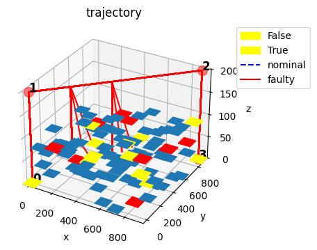
We can look at the results for each individual mode below. Note that by default these modes are grouped across the two injection times.
statsfmea = tabulate.FMEA(endresults, fs,
average_metric=['rate', 'unsafe_flight_time', 'cost', 'repcost',
'landcost', 'body_strikes',
'head_strikes', 'property_restrictions'],
rates='rate')
fmeatab = statsfmea.as_table(sort_by="cost")
fmeatab
| average_rate | average_unsafe_flight_time | average_cost | average_repcost | average_landcost | average_body_strikes | average_head_strikes | average_property_restrictions | ||
|---|---|---|---|---|---|---|---|---|---|
| drone.fxns.plan_path.ca.comps.vision | lack_of_detection | 4.583333e-03 | 13.5 | 1350.0 | 0.0 | 0.0 | 0.00000 | 0.0000 | 0.0 |
| undesired_detection | 4.583333e-03 | 0.0 | 0.0 | 0.0 | 0.0 | 0.00000 | 0.0000 | 0.0 | |
| drone.fxns.store_ee | lowcharge | 2.100000e-05 | 11.0 | 1200.0 | 100.0 | 0.0 | 0.00000 | 0.0000 | 0.0 |
| nocharge | 6.000000e-06 | 8.5 | 9750.0 | 1500.0 | 5000.0 | 0.00015 | 0.0001 | 0.5 | |
| drone.fxns.dist_ee | degr | 2.500000e-06 | 148.0 | 16100.0 | 1300.0 | 0.0 | 0.00000 | 0.0000 | 0.0 |
| drone.fxns.ctl_dof | degctl | 2.400000e-06 | 8.5 | 2350.0 | 1500.0 | 0.0 | 0.00000 | 0.0000 | 0.0 |
| drone.fxns.plan_path | degloc | 2.400000e-06 | 8.5 | 2350.0 | 1500.0 | 0.0 | 0.00000 | 0.0000 | 0.0 |
| drone.fxns.dist_ee | short | 1.500000e-06 | 8.5 | 9750.0 | 1500.0 | 5000.0 | 0.00015 | 0.0001 | 0.5 |
| drone.fxns.affect_dof.ca.comps.lf | ctlup | 1.000000e-06 | 8.5 | 9750.0 | 1500.0 | 5000.0 | 0.00015 | 0.0001 | 0.5 |
| drone.fxns.affect_dof.ca.comps.rr | ctldn | 1.000000e-06 | 8.5 | 9750.0 | 1500.0 | 5000.0 | 0.00015 | 0.0001 | 0.5 |
| drone.fxns.affect_dof.ca.comps.lr | ctlbreak | 1.000000e-06 | 8.5 | 9750.0 | 1500.0 | 5000.0 | 0.00015 | 0.0001 | 0.5 |
| drone.fxns.affect_dof.ca.comps.rr | ctlbreak | 1.000000e-06 | 8.5 | 9750.0 | 1500.0 | 5000.0 | 0.00015 | 0.0001 | 0.5 |
| ctlup | 1.000000e-06 | 8.5 | 9750.0 | 1500.0 | 5000.0 | 0.00015 | 0.0001 | 0.5 | |
| drone.fxns.affect_dof.ca.comps.lr | ctlup | 1.000000e-06 | 8.5 | 9750.0 | 1500.0 | 5000.0 | 0.00015 | 0.0001 | 0.5 |
| drone.fxns.affect_dof.ca.comps.lf | ctlbreak | 1.000000e-06 | 8.5 | 9750.0 | 1500.0 | 5000.0 | 0.00015 | 0.0001 | 0.5 |
| drone.fxns.dist_ee | break | 1.000000e-06 | 8.5 | 9750.0 | 1500.0 | 5000.0 | 0.00015 | 0.0001 | 0.5 |
| drone.fxns.affect_dof.ca.comps.rf | ctlup | 1.000000e-06 | 8.5 | 9750.0 | 1500.0 | 5000.0 | 0.00015 | 0.0001 | 0.5 |
| drone.fxns.affect_dof.ca.comps.lf | ctldn | 1.000000e-06 | 8.5 | 9750.0 | 1500.0 | 5000.0 | 0.00015 | 0.0001 | 0.5 |
| drone.fxns.affect_dof.ca.comps.rf | ctlbreak | 1.000000e-06 | 8.5 | 9750.0 | 1500.0 | 5000.0 | 0.00015 | 0.0001 | 0.5 |
| drone.fxns.affect_dof.ca.comps.lr | ctldn | 1.000000e-06 | 8.5 | 9750.0 | 1500.0 | 5000.0 | 0.00015 | 0.0001 | 0.5 |
| drone.fxns.affect_dof.ca.comps.rf | ctldn | 1.000000e-06 | 8.5 | 9750.0 | 1500.0 | 5000.0 | 0.00015 | 0.0001 | 0.5 |
| drone.fxns.plan_path | noloc | 6.000000e-07 | 8.5 | 2350.0 | 1500.0 | 0.0 | 0.00000 | 0.0000 | 0.0 |
| drone.fxns.ctl_dof | noctl | 6.000000e-07 | 8.5 | 9750.0 | 1500.0 | 5000.0 | 0.00015 | 0.0001 | 0.5 |
| drone.fxns.affect_dof.ca.comps.rr | openc | 5.000000e-07 | 8.5 | 9750.0 | 1500.0 | 5000.0 | 0.00015 | 0.0001 | 0.5 |
| drone.fxns.affect_dof.ca.comps.lr | mechbreak | 5.000000e-07 | 8.5 | 9750.0 | 1500.0 | 5000.0 | 0.00015 | 0.0001 | 0.5 |
| drone.fxns.affect_dof.ca.comps.rr | mechbreak | 5.000000e-07 | 8.5 | 9750.0 | 1500.0 | 5000.0 | 0.00015 | 0.0001 | 0.5 |
| drone.fxns.affect_dof.ca.comps.lf | short | 5.000000e-07 | 8.5 | 9750.0 | 1500.0 | 5000.0 | 0.00015 | 0.0001 | 0.5 |
| drone.fxns.affect_dof.ca.comps.rr | short | 5.000000e-07 | 8.5 | 9750.0 | 1500.0 | 5000.0 | 0.00015 | 0.0001 | 0.5 |
| drone.fxns.affect_dof.ca.comps.lr | openc | 5.000000e-07 | 8.5 | 9750.0 | 1500.0 | 5000.0 | 0.00015 | 0.0001 | 0.5 |
| drone.fxns.affect_dof.ca.comps.rf | short | 5.000000e-07 | 8.5 | 9750.0 | 1500.0 | 5000.0 | 0.00015 | 0.0001 | 0.5 |
| drone.fxns.affect_dof.ca.comps.lr | short | 5.000000e-07 | 8.5 | 9750.0 | 1500.0 | 5000.0 | 0.00015 | 0.0001 | 0.5 |
| drone.fxns.affect_dof.ca.comps.lf | mechbreak | 5.000000e-07 | 8.5 | 9750.0 | 1500.0 | 5000.0 | 0.00015 | 0.0001 | 0.5 |
| drone.fxns.affect_dof.ca.comps.rf | openc | 5.000000e-07 | 8.5 | 9750.0 | 1500.0 | 5000.0 | 0.00015 | 0.0001 | 0.5 |
| mechbreak | 5.000000e-07 | 8.5 | 9750.0 | 1500.0 | 5000.0 | 0.00015 | 0.0001 | 0.5 | |
| drone.fxns.affect_dof.ca.comps.lf | openc | 5.000000e-07 | 8.5 | 9750.0 | 1500.0 | 5000.0 | 0.00015 | 0.0001 | 0.5 |
| drone.fxns.store_ee.ca.comps.s1p1 | nocharge | 3.850000e-07 | 13.5 | 1450.0 | 100.0 | 0.0 | 0.00000 | 0.0000 | 0.0 |
| drone.fxns.affect_dof.ca.comps.rr | mechfriction | 2.500000e-07 | 8.5 | 9750.0 | 1500.0 | 5000.0 | 0.00015 | 0.0001 | 0.5 |
| drone.fxns.affect_dof.ca.comps.rf | mechfriction | 2.500000e-07 | 8.5 | 9750.0 | 1500.0 | 5000.0 | 0.00015 | 0.0001 | 0.5 |
| drone.fxns.affect_dof.ca.comps.lr | mechfriction | 2.500000e-07 | 8.5 | 9750.0 | 1500.0 | 5000.0 | 0.00015 | 0.0001 | 0.5 |
| drone.fxns.affect_dof.ca.comps.lf | mechfriction | 2.500000e-07 | 8.5 | 9750.0 | 1500.0 | 5000.0 | 0.00015 | 0.0001 | 0.5 |
| drone.fxns.store_ee.ca.comps.s1p1 | lowcharge | 1.833333e-07 | 13.5 | 1450.0 | 100.0 | 0.0 | 0.00000 | 0.0000 | 0.0 |
| drone.fxns.affect_dof.ca.comps.lf | propbreak | 1.500000e-07 | 8.5 | 9750.0 | 1500.0 | 5000.0 | 0.00015 | 0.0001 | 0.5 |
| drone.fxns.affect_dof.ca.comps.rf | propbreak | 1.500000e-07 | 8.5 | 9750.0 | 1500.0 | 5000.0 | 0.00015 | 0.0001 | 0.5 |
| drone.fxns.affect_dof.ca.comps.rr | propbreak | 1.500000e-07 | 8.5 | 9750.0 | 1500.0 | 5000.0 | 0.00015 | 0.0001 | 0.5 |
| drone.fxns.affect_dof.ca.comps.lr | propbreak | 1.500000e-07 | 8.5 | 9750.0 | 1500.0 | 5000.0 | 0.00015 | 0.0001 | 0.5 |
| drone.fxns.affect_dof.ca.comps.lf | propstuck | 1.000000e-07 | 8.5 | 9750.0 | 1500.0 | 5000.0 | 0.00015 | 0.0001 | 0.5 |
| drone.fxns.affect_dof.ca.comps.rf | propstuck | 1.000000e-07 | 8.5 | 9750.0 | 1500.0 | 5000.0 | 0.00015 | 0.0001 | 0.5 |
| drone.fxns.affect_dof.ca.comps.rr | propstuck | 1.000000e-07 | 8.5 | 9750.0 | 1500.0 | 5000.0 | 0.00015 | 0.0001 | 0.5 |
| drone.fxns.affect_dof.ca.comps.lr | propstuck | 1.000000e-07 | 8.5 | 9750.0 | 1500.0 | 5000.0 | 0.00015 | 0.0001 | 0.5 |
| drone.fxns.store_ee.ca.comps.s1p1 | degr | 5.500000e-08 | 13.5 | 1450.0 | 100.0 | 0.0 | 0.00000 | 0.0000 | 0.0 |
| break | 5.500000e-08 | 13.5 | 1450.0 | 100.0 | 0.0 | 0.00000 | 0.0000 | 0.0 | |
| short | 5.500000e-08 | 13.5 | 1450.0 | 100.0 | 0.0 | 0.00000 | 0.0000 | 0.0 | |
| drone.fxns.affect_dof.ca.comps.rf | propwarp | 5.000000e-08 | 8.5 | 9750.0 | 1500.0 | 5000.0 | 0.00015 | 0.0001 | 0.5 |
| drone.fxns.affect_dof.ca.comps.rr | propwarp | 5.000000e-08 | 8.5 | 9750.0 | 1500.0 | 5000.0 | 0.00015 | 0.0001 | 0.5 |
| drone.fxns.affect_dof.ca.comps.lr | propwarp | 5.000000e-08 | 8.5 | 9750.0 | 1500.0 | 5000.0 | 0.00015 | 0.0001 | 0.5 |
| drone.fxns.affect_dof.ca.comps.lf | propwarp | 5.000000e-08 | 8.5 | 9750.0 | 1500.0 | 5000.0 | 0.00015 | 0.0001 | 0.5 |
| drone.fxns.manage_health | lostfunction | 7.500000e-09 | 13.5 | 2350.0 | 1000.0 | 0.0 | 0.00000 | 0.0000 | 0.0 |
| drone.fxns.hold_payload | deform | 2.200000e-09 | 8.5 | 9750.0 | 1500.0 | 5000.0 | 0.00015 | 0.0001 | 0.5 |
| break | 5.500000e-10 | 8.5 | 9750.0 | 1500.0 | 5000.0 | 0.00015 | 0.0001 | 0.5 |